1Introduction
The SAM 950 is designed to meet the requirements of ANSI 42.34 criteria for hand-held instruments for the detection and identification of radionuclides.
This instrument provides a superb solution for the demanding requirements of emergency responder and Homeland Security in the USA and other countries. Our solution replaces traditional designs with a unique solution that seamlessly integrates a powerful PDA or Smartphone with the Nuclear Radiation measuring detectors.
The SAM 950 unit is designed to accommodate various type and size of radiation detectors. Available detectors are: 2x2 or 3x3 inch NaI(Tl), 1.5x1.5 or 2x2 inch high resolution detectors such as LaBr3 or CeBr3. The unit also equips a supplementary GM tube which takes over measurement of high dose radiation when it exceeds 10 mR/h. A solid state neutron detector, "Domino", which has small form factor with superior gamma rejection than He-3 detector can be added optionally.
One of the most distinctive features compared to the conventional hand-held RIIDs are attaching photo, video and/or voice/text comments to the event file. In addition, measured events can be sent via WiFi network to a reach-back center and/or RadResponder site in real time. These feature are enabled by the powerful smartphone application SW, PeakAbout III.
Data acquisition is securely conducted via wired connection to the Personal Digital Assistant (PDA) unit. The standard PDA unit is the Samsung J5 or equivalent. The PDA display provides the user with easy to read information providing assessment of current radiological levels including personal safety and radionuclide identification. Upon completion of a survey the data may be downloaded from the PDA unit to the PC. The optional GPS unit provides the data necessary for mapping of the radiation levels.
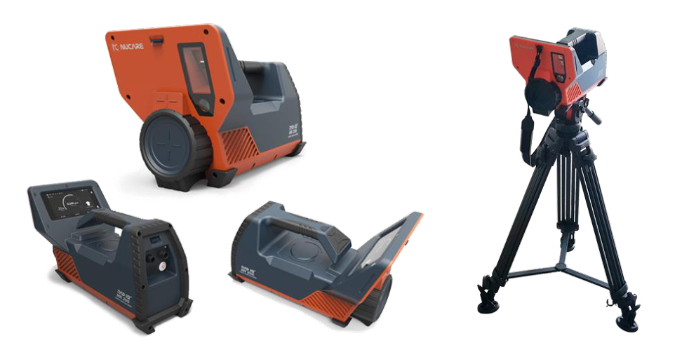
Important Safety Information
The SAM 950 has been meticulously engineered to provide safe, dependable, high performance to its user for years to come. But, as with any kind of electrical equipment, following instructions and taking basic precautions will prevent injury to yourself or to the equipment. Therefore, prior to using this equipment you should:
- Read and understand this manual thoroughly.
- Store all provided documents in a safe place for future reference.
- Especially be sure to read the "SAFETY" chapter of this manual and thoroughly understand all warning and caution labels.
Product Warranty
Description of the Berkeley Nucleonics Corporation warranty for the SAM 950 handheld RIID systems:
- The unit is warranted to be free of defects in material and workmanship, including: parts, labor and all unit elements.
- Warranty is 1 Year standard, unless otherwise specified. Materials and workmanship, return to manufacturer included.
2Safety
Cautions and Notes
The following warnings and instructions are vital to the optimal operation of the SAM 950 unit and should be made readily accessible for reference. Follow these warnings and instructions thoroughly to use the unit correctly and to protect the safety of the users.
Handling Instructions
- The maintenance service of the unit should only be handled by qualified/trained personnel.
- Cleaning the Camera and Flash lamp Windows: clean the windows with a soft, moist cloth to keep them clean and clear. Turn off the power before cleaning.
Safety Hazard Warnings
- It can be very hazardous to open the unit on account of high voltage inside the unit (high voltage in the detector is up to 1000 Volts). Be sure to refer all servicing to qualified/trained personnel.
Disposal Instructions
- If/when disposing the unit: observe local and national regulations for the disposal of units containing a lithium battery.
- Do not use household of municipal waste collection services for disposal of electrical and electronic equipment. EU countries require the use of separate recycling collection services.
- External equipment intended for connection to signal input, signal output or other connectors, shall comply with relevant EN Standard (e.g., EN 61326-1:2013, EN 301 489-1 V1.9.2 and EN 301 489-17 V2.2.1).
- If, in doubt, contact qualified technician or your local representative.
Classification
- EMC: Comply with EN 61326-1: 2013, EN 301 489-1 V1.9.2 and EN 301 489-17 V2.2.1.
- FCC Class: Class B Equipment (FCC CFR 47 part 15 subpart B, Section 15.101).
- Laser: Class II Equipment (Max. output: < 1mW, Wavelength: 650 - 660 nm).
- Degree of protection against electric shock: Type BF Applied Part.
- Degree of protection against the ingress of water: IP65.
- Equipment not suitable for use in the presence of a flammable anesthetic mixture with air or with oxygen or nitrous oxide.
Labels
The label providing the system power requirements and serial number of the system is located at the back-side of the unit.
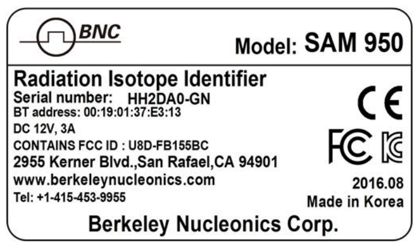
3System Description
System Components
SAM 950 components, its accessories and carrying case are shown in figure 3.1.
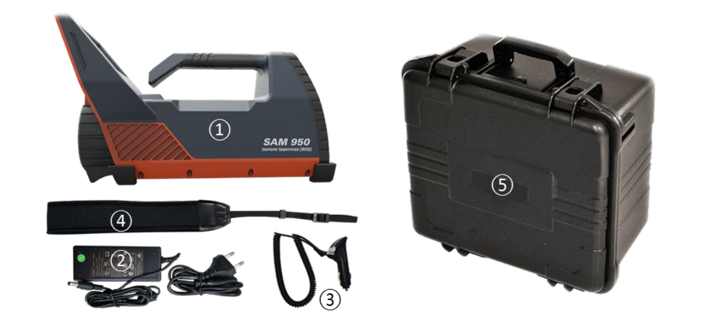
- SAM 950 detector unit
- DC power adaptor for SAM 950 (DC 12V)
- Vehicle charging adaptor
- Shoulder strap
- Water and shock proof carrying case
Specifications
| INPUT / OUTPUT | |
|---|---|
| USB | Micro USB 2.0, IP65 |
| AC Adapter | 12v, 3A |
| Camera | CMOS 13.0 MP |
| Speaker | 84dB(1W/0.5m), Water Proof |
| GPS | Built-in GPS in Smartphone |
| Display | 5 inch touch screen |
| PHYSICAL | |
| Dimensions (W x D x H) | 192 x 356 x 214 (mm) |
| Weight | 4.3kg (9.5lb) w/ 3x3 inch NaI(Tl), 3.2kg (7 lb) w/ 2x2 inch NaI(Tl), 3kg (6.6lb) w/ 1.5x1.5 inch LaBr3, CeBr3 |
| ENVIRONMENTAL | |
| Operating Temperature | -15℃(5℉) ~ 50℃(122℉) |
| Relative Humidity | 10 to 80%, non condensing |
| PERFORMANCE | |
| Energy Resolution (Gamma) | NaI(Tl) 2x2, 3x3 inch :< 8%@662Kev, LaBr3 2x2 inch :< 3.5%@662Kev, CeBr3 2x2 inch :< 5%@662Kev |
| Energy Range (Gamma) | 20 Kev - 3 Mev |
| MCA channel | 10bit, 1024 channel |
| Dose rate range | 0 - 10 mR/h (NaI), 10 mR/h - 10 R/h (GM) |
| Stabilization | Automatic real-time stabilization using K-40 |
| Nuclide Identification | According to ANSI N42.34, isotope/category/confidence report |
| Battery | >8hours, Lithium Ion |
| DETECTORS | |
| Gamma Detector | NaI(Tl) - 2x2, 3x3 inch, CeBr3 - 1.5x1.5, 2x2 inch, LaBr3 - 1.5x1.5, 2x2 inch |
| Gamma (High Dose Rate) | Gain Compensation Geiger-Muller detector |
| Neutron (Optional) | Solid-state Neutron detector : 4cm2 active area, 20% thermal neutron eff. Gamma rejection: 1:107 |
| SOFTWARE | |
| Reach-back Feature | ANSI N42.42 or CSV event data via a Smartphone (Wi-Fi) |
| Application SW | Android based application SW for Smartphone, Windows based application SW for Command Center |
Detectable Isotope List
| Category | Isotopes |
|---|---|
| NORM | K-40, Ra-226 and daughters, Th-232 and daughters |
| Medical | F-18, Cr-51, Ga-67, Mo-99, Tc-99m, Pd-103, In-111, I-123, I-125, I-131, Xe-133, Sm-153, Tl-201 |
| Industrial | Na-22, Co-57, Co-60, Se-75, Rh-106, I-132, I-133, Ba-133, Cs-134, Cs-137, Eu-152, Ir-192, Am-241 |
| SNM | U-233, U-235, U-238, Pu-239, Pu-241, Np-237 |
Power and Battery Charge Guide
Figure 1.4 shows the location of the power switch and the DC connector for charging the internal battery. The LED turns red when the power is ON.
The battery charger (figure 3.2 below) has a built-in overcharging protection circuit. Once the battery is fully charged the LED turns green and auto charging is terminated.
The power system of PDA is directly connected and controlled by the SAM 950's internal battery. Therefore, PDA's operation time is same as the SAM 950 unit and its On/Off is synchronized with the SAM 950 unit.
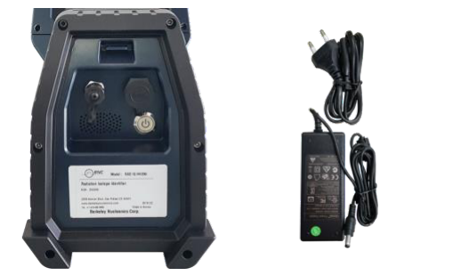
SAM 950 also can be charged by vehicle electric system with standard 12 V DC. Figure 3.3 shows a vehicle charging unit.
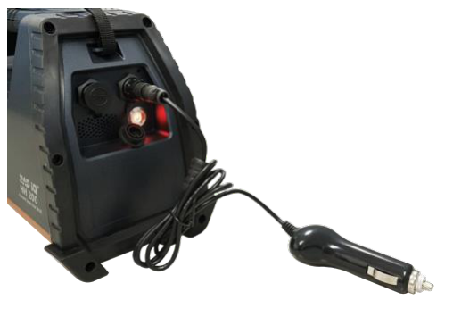
The SAM 950 is equipped with a Lithium Ion battery. The battery has a built-in power protection circuit (PCM) which prevents the battery from both overcharging and over-discharging.
Camera and Flash Light
SAM 950 is equipped with built-in camera and a LED flash light for recording media information and operation in dark environment.
- Push and hold (2 seconds) the 'up-arrow' button with a lamp icon (refer to the figure 3.4), the LED flash light is turned ON. With same manner, the flash light is turned OFF.
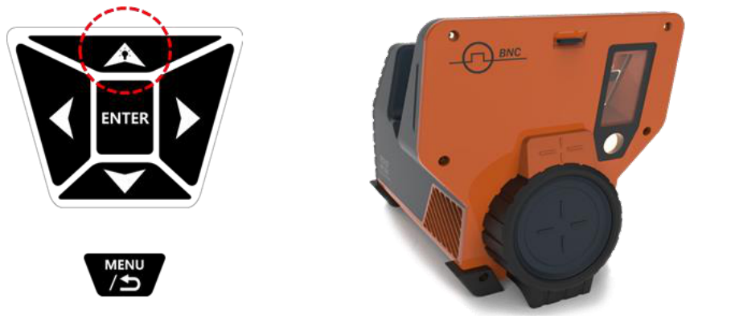
Tripod Assemble Guide
SAM 950 can be mounted on a tripod. A tripod adaptor hole is located on the bottom of SAM 950 as shown in figure 3.5.
Standard tripod screw shoe size is 3/8-16. Front and back hole are designed for 3x3 inch and 2x2 inch (1.5x1.5 inch) detectors, respectively by considering weight balance.
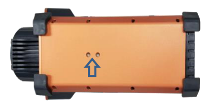
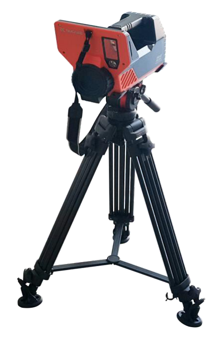
Figure 3.5. Tripod adaptor holes and SAM 950 mounted on a tripod.
Shoulder Strap Assemble Guide
To minimize fatigue of an operator, SAM 950 can be wearing on shoulder using a shoulder strap.
- There are two strap hooks at front and back of the SAM 950 body. Assemble example is shown in figure 3.6.
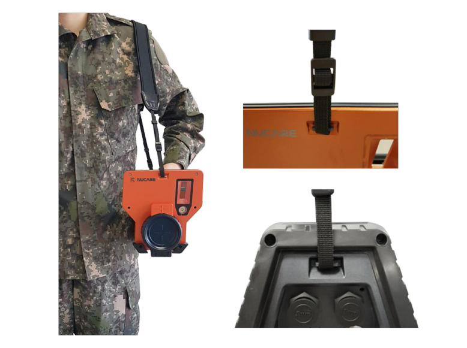
SAM 950 Software
SAM 950 software consists of two programs.
- "SAM III PeakAbout III": application software for the PDA
- "SAM III PeakID": command center software for a PC running the Windows Operating system.
The PDA application software is preinstalled in the imbedded PDA. The PDA application SW is used in the configuration and calibration procedures as well as for the real-time measurement and analysis of spectral data acquired by the SAM 950.
The command center software supports event-log file management, integration of data from multiple units, and data backup. For detailed installation instructions please refer to the appropriate sections in this manual.
Prerequisites for the Operation of the SAM 950
Charge the SAM 950 battery:
- Turn off the system (recommended for fastest time to full charge).
- Plug-in the DC adaptor to the DC connector.
- The LED on the DC power adaptor changes to green when the unit is charging.
- Full charge may take up to 6 hours.
- The LED on the DC power adaptor OFF when the unit is fully charged.
- The charging cable is securely locked to the female connector on the unit. Disengage the spring loaded connector by firmly holding the male connector and gently twisting ¼ turn, then pulling straight back on the connector.
For detailed setup, configuration, background measurement and calibration procedures please refer to the appropriate sections in this manual.
4PDA Application Software
Introduction
The built-in PDA communicates with the SAM 950 unit through wired USB network protocol. Its main function is to provide dose (and count) rate data for the gamma-ray. In addition it provides the operator with a convenient graphic status display and access to the analytical tools. It also manages the configuration and calibration of the paired SAM 950 unit.
The SW is Android (Google) OS based and compatible with any Android based PDA or Smart Phone. The standard unit imbedded with the SAM 950 is the Samsung Galaxy J5 or equivalent. In addition to touch screen in handling the imbedded smartphone, it can be also controlled by hardware button keys on the handle of the SAM 950 unit.
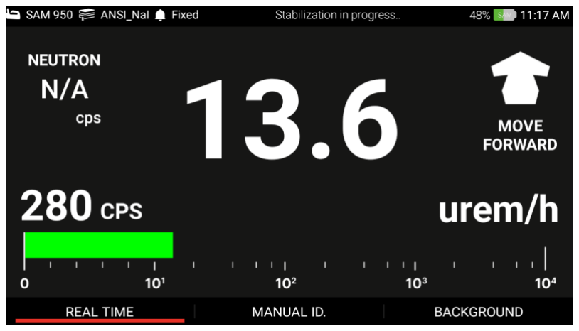
Function Buttons
The function buttons of SAM 950 on its handle provides convenient control and operation of the unit in addition to the touch screen capability. A user can operate the buttons with wearing a glove. The basic function of each button is summarized in table 4.1.
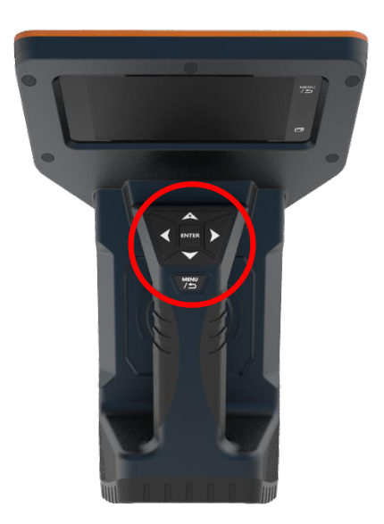
| Button | Action | Function |
|---|---|---|
| Left / Right | – | Move |
| Up / Down | – | Move |
| Enter | ||
| Enter | Click | Selection / execute |
| Enter | Click & Hold (2 sec) | Manual Source ID Start |
| Back / Menu | ||
| Back / Menu | Click | Back to previous menu |
| Back / Menu | Click & hold (2 sec.) | Return to main Menu |
| Up-arrow (lamp) | Click & hold (2 sec.) | Light on / off |
Table 4.1. Basic function of function key buttons
Software Upgrade Guide
SW update notification message is automatically sent and displayed when the latest SW version is available and the currently installed version is lower than the latest one. The SAM 950 unit has to be connected WiFi network to download/upgrade to the latest SW.
Following is software upgrade procedure. Refer to the figure 4.3 below.
- SW upgrade notification message is appeared on the low bottom of the main screen as shown in figure 4.3 only if the currently installed version is lower than the latest one.
- To upgrade, go to the Device Information by following path: Pop up menu (by press and hold menu) → Setup → Device Information.
- Touch and select 'Download latest SAM III SW'.
- Type in 'BSN' number and select 'PeakAbout III' PDA application SW. BSN (BNC Serial Number) is located on the label.
- Installation screen is opened as shown in figure 4.4. Follow the 4 steps below.
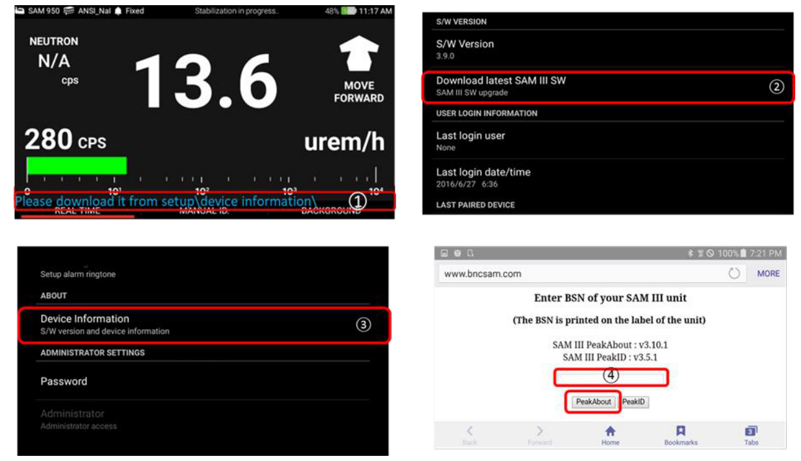
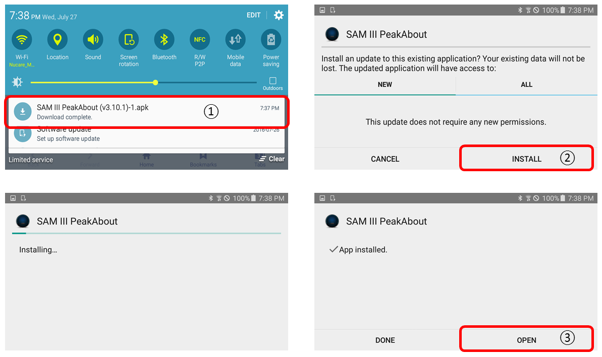
Main and Sub-Menu Structure
Measurement status display, configuration, event log management, reach-back service, media file generation, spectrum analysis, background measurement and calibration are all managed by the PDA and its application software.
Intuitive, simple and hierarchical structure design of the new PeakAbout III software make the operation of SAM 950 easy and flawless. In addition, function buttons on handle provides extra convenience in handling the unit with wearing gloves.
Figure 4.5 and 4.6 graphically summarizes hierarchical structure of menus and describes how to use touch screen or function buttons in order to surf between menus. Figure 4.5 shows menu structure for event generation, manual ID and media file attachment procedure. And Figure 4.6 covers structure for setup and event log management related tasks.
Menu structure of manual ID and media file attachment
- Main 'Gauge' ① and 'Finder' ② screen can be toggled by pressing up/down function button or swiping up/down with a finger on the touch screen.
- 'Manual ID' screen ③ is accessed by press and hold Enter key or touch 'Manual ID' menu on the screen from the 'Gauge' menu any time.
- 'Spectrum' ③ and 'Classification' ④ screen can be toggled by pressing left/right function button or swiping left/right with a finger on the touch screen.
- Stop ID and return to main screen by press Back button from either 'Spectrum' ③ or 'Classification' ④ screen. In this case, the event is deleted.
- When manual ID is completed, 'Event summary' ⑤ screen is automatically popped-up. In this screen, user can send the event to Reach-back ⑥ and/or RadResponder server ⑦ or attach media files such as text/audio comment ⑨, photo(s) and video(s) ⑧.
- Pressing Back button from the 'Event summary' ⑤ screen saves event data and returns to main 'Gauge' screen ①.
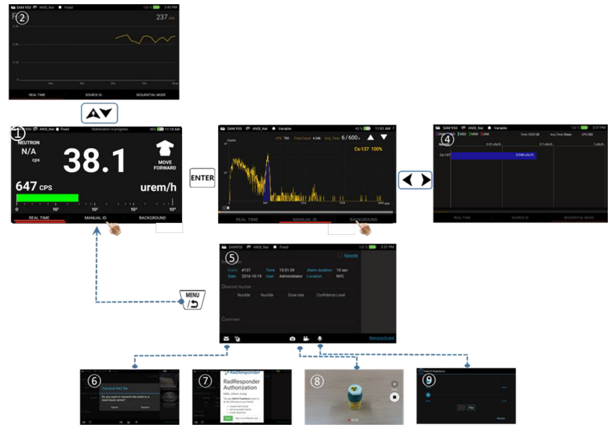
| # | Screen | Description |
|---|---|---|
| 1 | Main GUI screen | Dose rate, Count rate, System status, menu and battery indicator |
| 2 | Finder screen | Display real-time radiation activity by time |
| 3 | Manual ID screen | Manual ID screen with spectrum, ID result display. |
| 4 | ID classification screen | ID analysis and classification, dose rate information |
| 5 | ID summary screen | Manual ID condition, ID summary, media management |
| 6 | Reach-back screen | Reach back service screen |
| 7 | RadResponder screen | RadResponder service screen |
| 8 | Photo/video | Attach photo(s) and video(s) to the event |
| 9 | Voice msg. | Record voice comment to the event |
Menu structure of setup and event log management
The setup and event log management features are intentionally hide from the main tasks such as 'Manual ID' and 'Media file generation' explained above in order to avoid busy traffic and complications in operation. The setup and event log management can be accessed by press menu button from the main screen. The pop-up menu is appeared and allows user to jump to the setup and event log screen.
- 'Setup' ④ and 'Event log' ③ screen is accessible by selecting appropriate menu from the pop-up menu on the main screen.
- 'Event log' screen ③ allows several tasks such as event analysis, Reach back service, RadResponder ⑤ service, and etc.
- 'Setup' ④ allows user to configure various parameters such as calibration ⑥, sequential mode programming, alarm threshold ⑦, ringtone selection ⑧, account setup and more.
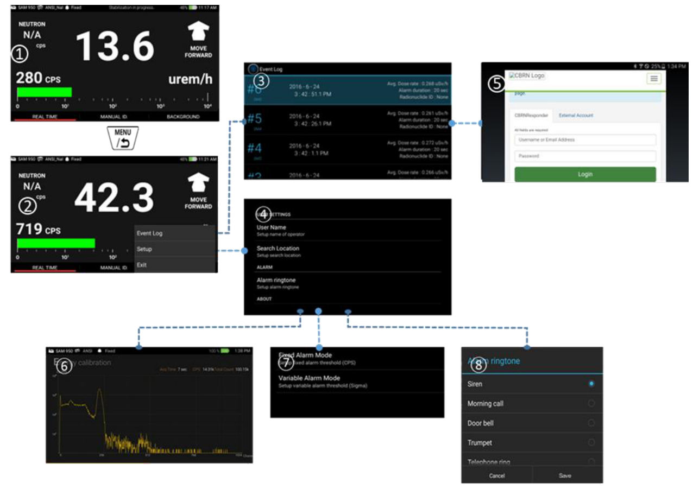
Primary GUI
Primary GUI is the main home screen that primarily contains Gamma and Neutron activity information. In addition, library, alarm status, and battery indicator information are also displayed. The primary GUI is the gate way to major takes such as 'Real Time' activity analysis, 'Manual ID', 'Background' and optional 'Sequential mode' access. Those menus can be accessed by touching corresponding menu tab located on the bottom of the primary GUI as shown in figure 4.7 or pressing function buttons on the handle.
The primary GUI and its components are shown in figure 4.7. Details are provided in the following sections.
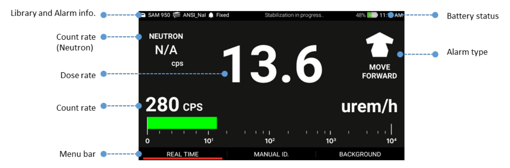
To access 'Setup' and 'Event log' list, press and hold the menu button on the handle or touch icon on the screen. The pop-up menu is appeared as shown in figure 4.8.
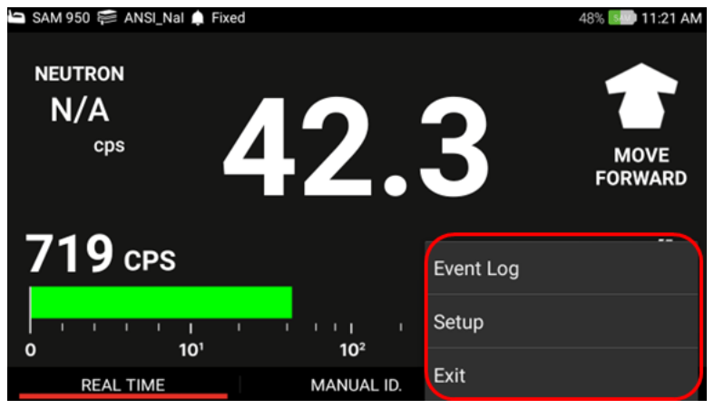
Calibration and Background Measurement
Background / Calibration menu is accessed by touching the setup button (to access the pop-up menu, click and hold the menu button on the handle or touch icon on the PDA screen). Background measurement is easily accessed by clicking the Background menu on the primary GUI screen, as shown in the figure.

Background measurement can also be performed in the Setup menu by following steps 1 and 2.
- Select "Setup" either by touch on the screen or move curse using the key button on the handle.
- Select the desired setup procedure, i.e., Background.
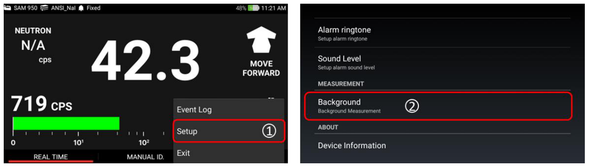
Calibration measurement can also be performed in the Setup menu by following steps 1 to 4.
- Select "Setup" either by touch on the screen or move curse using the key button on the handle.
- Log in as User or Administrator (password protected).
- Select the desired setup procedure, i.e., Energy Calibration.
- Calibration: place a calibration source (Cs-137) in front of the detector (minimum 3 inches away from the detector surface) and start calibration. Required counts to terminate the calibration procedure is defined in 'Setup' menu.
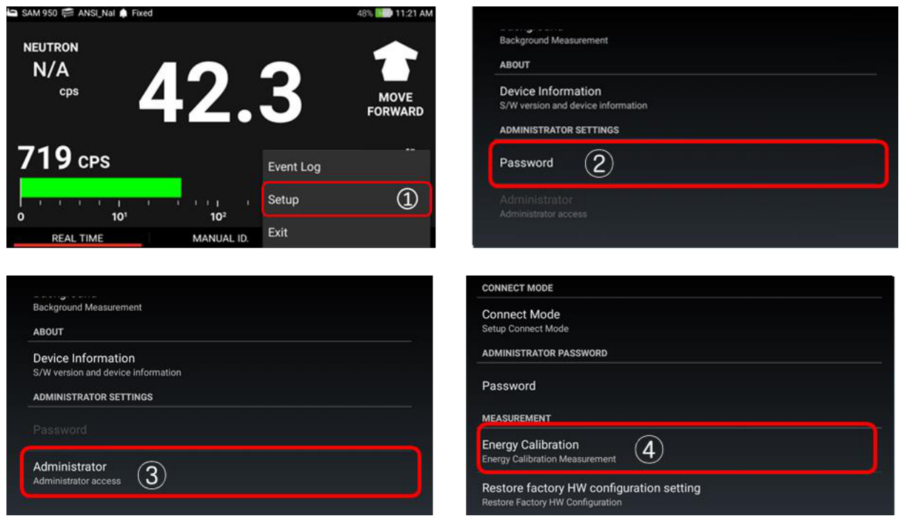
The calibration information is saved in the memory of SAM 950. And the new calibration information can be replaced by click "Save" when calibration is completed as shown in 4.12. By selecting "Cancel" the new calibration is NOT replaced to the new one.
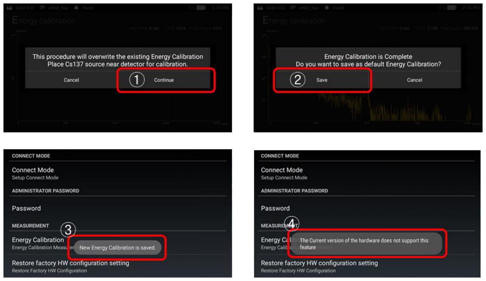
The Energy Calibration screen is shown in the figure below.
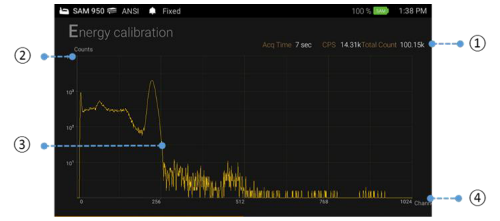
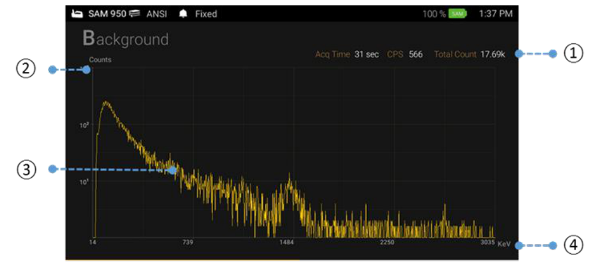
In calibration mode, place a Cs-137 source front the SAM 950. When the slected number of counts have been acquired, the screen will display "Success". Remove the Cs-137 source when calibration is completed. The x-axis unit change from channel number to energy in keV.
| # | Item | Description |
|---|---|---|
| 1 | Information | Date/Time, Acq. Time and count rate information |
| 2 | Counts | Y-axis unit display (counts in self-adjusting & logarithmic scale) |
| 3 | Spectrum | Real time spectrum display |
| 4 | Ch/Energy | X-axis unit display (channel or energy in linear scale) |
Isotope Identification
The SAM 950 can perform isotope identification by manually despite of alarm status. There are three ways to execute 'Manual ID': 1. Press and hold the 'Enter' key for about 2 seconds, 2. Touch the 'Source ID' menu on the main screen, or 3. Scroll and locate the red bar on the 'manual ID' menu by using left/right button on the handle and press 'Enter' key. Figure 4.15 shows graphical illustration of ways to execute 'Manual ID'.
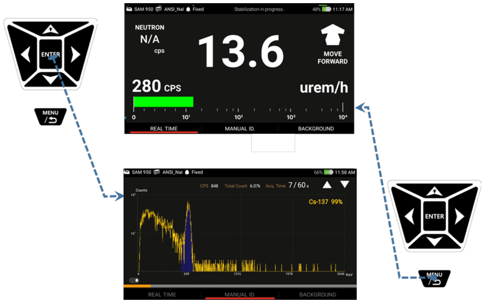
To do programmed and automatic isotope identification, user can select 'Sequential mode' measurement. The sequential mode can be programmable in 'Setup' menu. The isotope identification result, i.e., 'event log' is automatically saved when the ID is completed. However, unwanted event can be discarded by stopping ID process by pressing 'Back' button anytime during manual ID.
Manual ID screen
The primary screen is switched to 'Manual ID' screen as shown in figure 4.16 when 'Manual ID' is executed. Spectrum is updated every 1 second and photo-peak area(s) is color coded with candidate isotope information. The duration of 'Manual ID' is configured in setup menu. The default duration is 30 sec. with 10 sec. increment. However, user can configure the default time and increment by his own preference. Duration can be increased/decreased by increment time using up/down button key on the handle.

| # | Item | Description |
|---|---|---|
| 1 | Battery Status | Battery status of SAM 950 unit and time information |
| 2 | Library and Alarm | Library and alarm type information |
| 3 | ID duration | ID duration and progress. Up/down arrow: increment/decrement ID duration |
| 4 | Count info. | Total count and CPS information |
| 5 | Counts | Y-axis unit display (counts in self adjusting and logarithm scale) |
| 6 | Ch/Energy | X-axis unit display (channel or energy in linear scale) |
| 7 | Isotope ID | Isotope ID information |
| 8 | Photo Peak | Photo-Peak with color cording |
| 9 | Toggle screen | Toggle screen between spectrum display and ID analysis |
Isotope classification screen
The Isotope Classification screen is shown in figure 4.17. To access the screen, touch tab menu along the bottom of the Identification screen as shown in figure 4.16, and swipe left or right or press left/right function button on the handle.
In this mode, the real-time Dose Rate measurement of identified nuclides is graphically displayed in a horizontally oriented bar graph. If multiple isotopes are identified, SAM III PeakAbout II will place the most significant isotope (highest contributing dose rate) as the top-most bar, and the remaining isotopes in descending order to the least significant isotope (lowest contributing dose rate). Each bar will be named and displayed with the corresponding classification color as shown in figure 4.17.
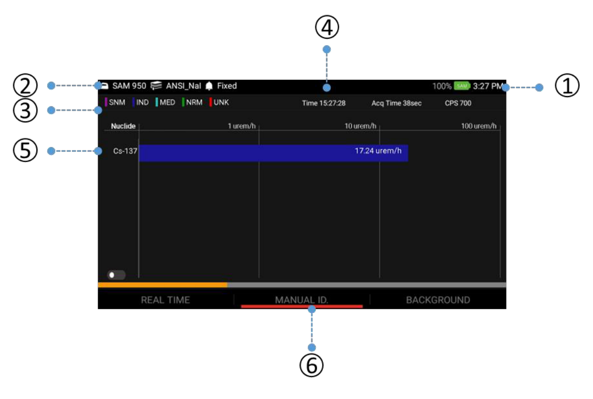
| # | Item | Description |
|---|---|---|
| 1 | Battery Status | Battery status of SAM 950 unit and time information |
| 2 | Library and Alarm | Library and alarm type information |
| 3 | Classification | Classification of individual isotope(s) identified. Class of identified isotope:
|
| 4 | Time/Duration/CPS | Time of ID completion, ID duration and count rate (CPS) information |
| 5 | Dose rate | Dose rate of classified isotope (color coded, logarithmic bar graph) |
| 6 | Swipe Bar | Swipe left/right on the bar to switch between identification/classification |
Function button summary in 'Manual ID' mode
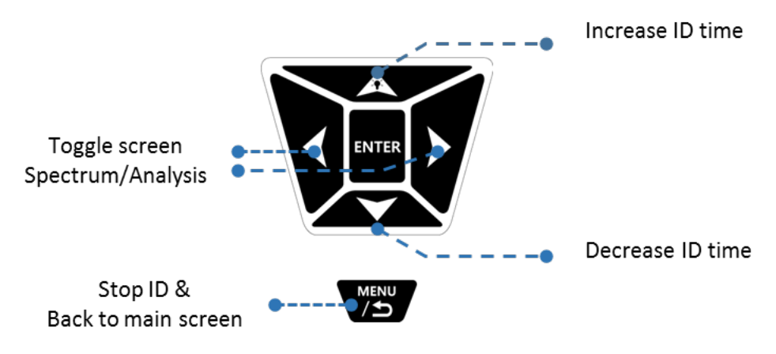
Manual ID Result
'Manual ID' result screen is automatically appeared as soon as the ID is completed as shown in figure 4.19. In this screen, the user is allowed to add voice and/or text memo, photo(s) and video(s). The media file(s) are attached into the event log file and saved in the database.
In addition, the event can be immediately send to a desired reach-back and/or third party server such as 'RadResponder'. Refer to the session below for setting up 'Reach-back' and 'RadResponder' account(s). In order to have 'Reach-back' or 'Third party server' service, the unit has to be in WiFi network connection.
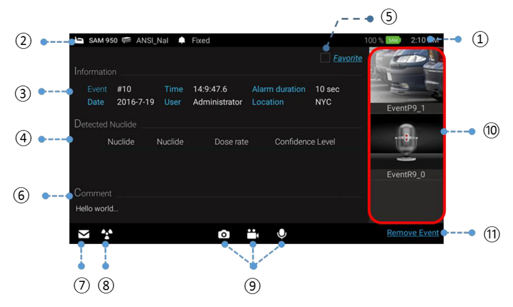
| # | Item | Description |
|---|---|---|
| 1 | Battery Status | Battery status of SAM 950 unit and time information |
| 2 | Library and Alarm | Library and alarm type information |
| 3 | Information | General information of event. Event: event serial number; Date/Time: date and time of event; Alarm duration: manual ID duration; User: user information; Location: event location information |
| 4 | Detected Nuclide | Isotope(s) identified |
| 5 | Favorite | 'Favorite' tag is attached into event file when the box is checked |
| 6 | Comment | Type in text comment about the event |
| 7 | Reach-Back | Send event file as CVD file to a reach-back center |
| 8 | RadResponder | Send event information to 'RadResponder' server |
| 9 | Media Record | Take photo(s), Video(s) and voice comment. And attached to the event log file |
| 10 | Media List | Preview media files attached and open for review |
| 11 | Remove Event | Remove Event |
Function button summary in 'Manual ID Result' mode
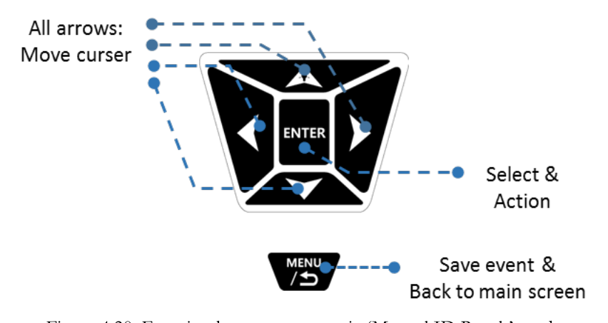
How to set up Reach-Back
Reach-back service is performed via WiFi network. The event file is converted into standard N42 file format and send to the 'Reach-back' center via email. To enable 'Reach back' feature, appropriate email account has to be stored.
Setup email account: Type in information about the sender and receiver's email account information as shown in figure 4.21. The email account setup menu can be accessed by: Press menu button on the main screen → select 'Setup' menu → Administrator → E-mail account.
Send event(s) from Event Log to Reach-Back
User also can send any event(s) stored in Event Log either to Reach-Back center or third party server (RadResponder). Figure 4.22 summarizes procedure.
- Select event from the Event log list and hold for about 2 seconds.
- Select 'Reach-back' icon as destination to send.
- Select transmit.
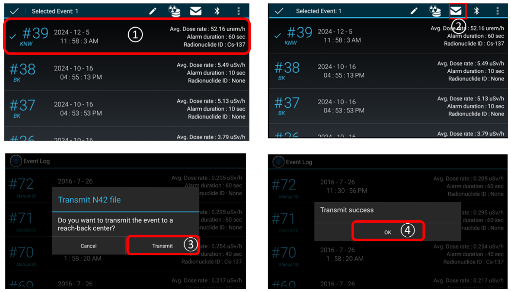
Send event(s) from Event Log to RadResponder
With similar manner to Reach-back service, the event(s) can be send to a server of third party directly. We have partner with RadResponder team and setup necessary account and data format to send our event file. For details about RadResponder please visit www.Radresponder.net
- Select event from the Event log list and hold for about 2 seconds.
- Select 'RadResponder' icon as destination to send.
- Sign in with RadResponder account.
- Click 'Grant'.
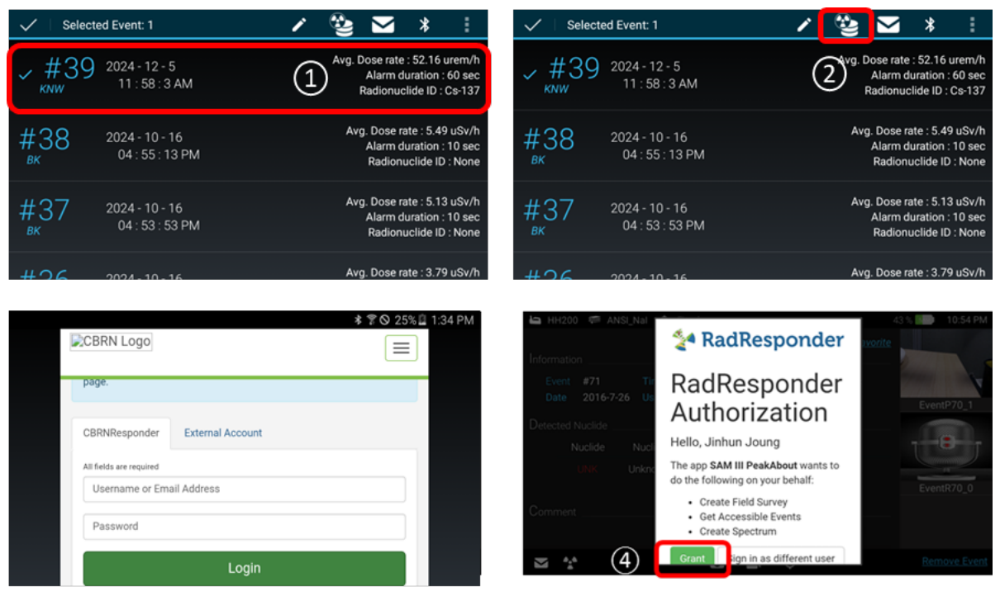
Validation of file transfer to RadResponder server: User can validate file transfer by examining 'success' tag on the event or visiting RadResponder site (www.radresponder.net: /data/spectra). Figure 4.24 shows examples of successful file transfer.

Attach Media Files
Text and audio comments and/or photo/video may be attached to the opened event.
Attach text comment procedure (figure 4.25)
- Touch Comment area. The keypad and typing window screen appeared.
- Type in comments and touch "Done" button.
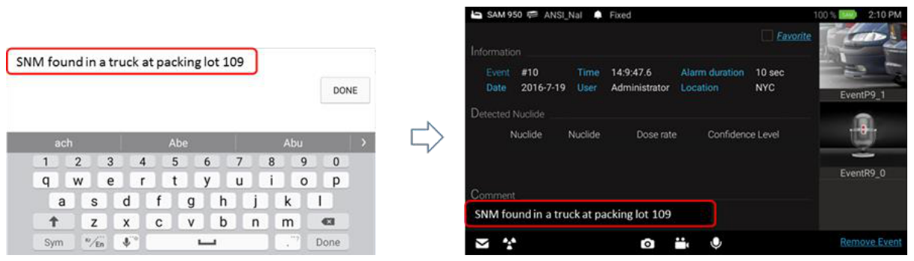
Attach audio comments/photo/video procedure (figure 4.26)
- Touch 'Photo', 'Video', or 'Audio' icon. Selected application is now opened.
- Take audio comment, photo or video and save.
User can save as many photo/video as needed. The total number of photo/video saved is displayed on the screen.
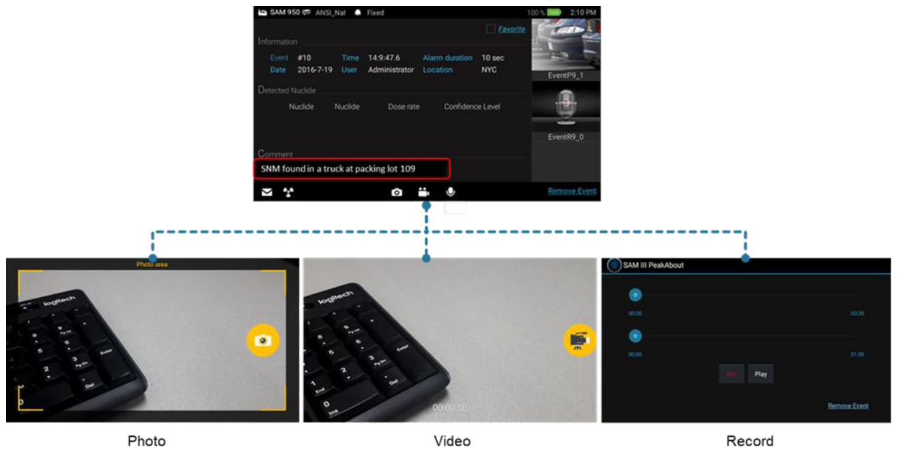
Sequential Mode Operation
SAM 950 provides automatic and programed event log generation. This feature is quite useful when sequential event(s) has to be monitored with long period of time. The 200 unit can be mounted on a tripod for convenience and steady monitoring over long measurement time.
Following is steps to configure sequential mode operation.
- Press menu button and select Setup menu.
- Select 'Sequential Mode'.
- Sequential Mode is optional feature. It can be On/Off by check/uncheck the box as shown in figure 4.27.
- Setup 'Measurement Time', 'Pause time' and 'Number of Measurement'.
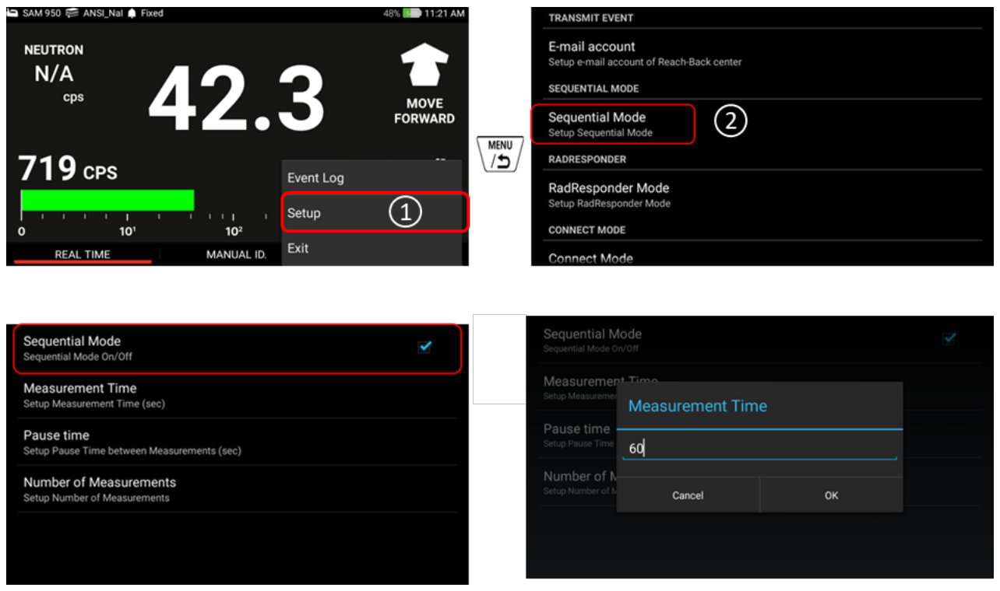
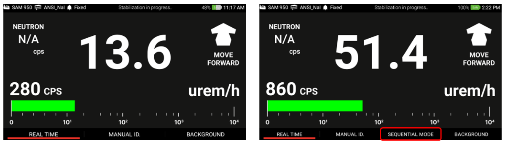
Favorite Event
User can attach a 'FAVORITE' tag to a desired event by check the 'Favorite' box on the 'Event log' screen. The 'FAVORITE' tag is appeared on the bottom of event number in the event log list as shown in figure 4.29.
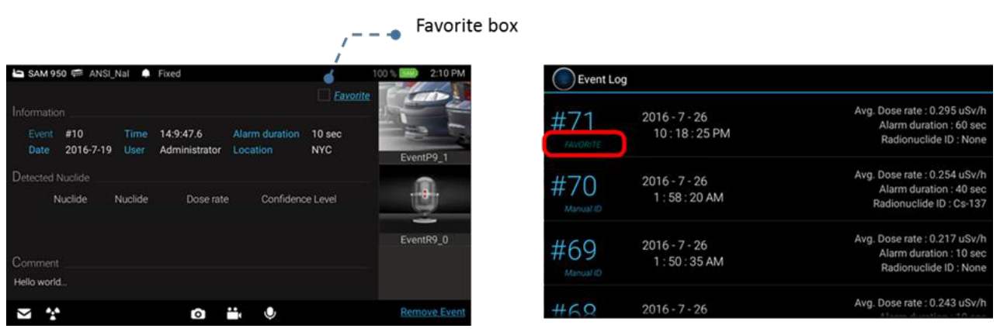
Spectrum Manipulation
Spectrum view manipulation is achieved by touching the PDA display as shown in figure 4.30.
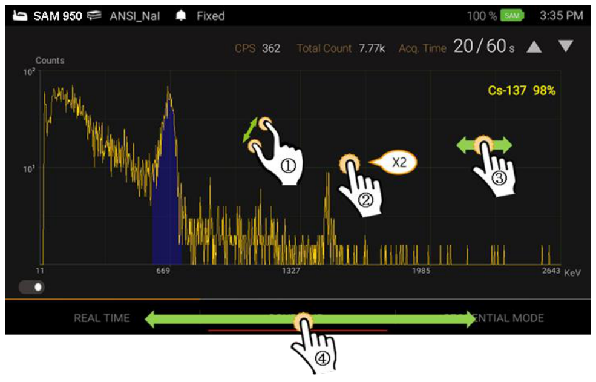
| # | Action | Effect |
|---|---|---|
| 1 | Touch with two fingers and expend or retract | Zoom in/out on a region of interest |
| 2 | Tap twice quickly | Zoom back to the original spectrum scale |
| 3 | Hold and move left/right | Spectrum moves along the x-axis (if display is zoomed in) |
| 4 | Touch/hold on x-axis and move left/right | Initiate a moveable swipe bar to display Real Time and Sequential mode at the touched position |
5Operational Instructions
Step 1. Prepare the SAM 950 for Operation
- Fully charge the SAM 950 unit.
- Turn power ON. The red LED lamp is turn on.
Both the SAM 950 unit and imbedded PDA are charged and powered simultaneously.
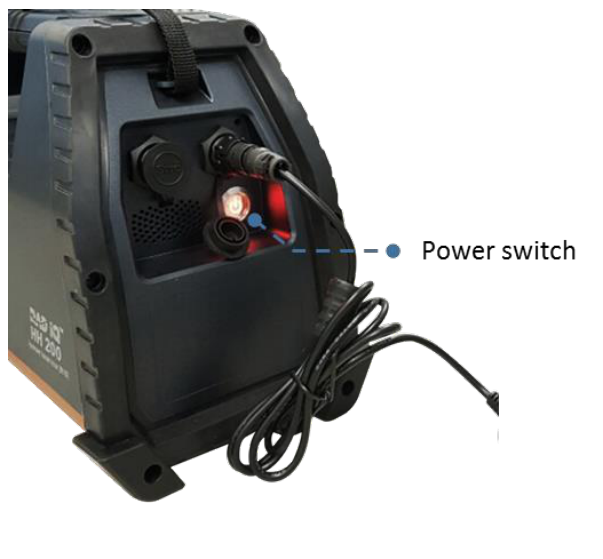
Step 2. Log In
- Log in as User or Administrator (password protected).
- To change password, setup the password as shown in figure 5.2.
- Setup menu can be accessed by press menu button on the handle or Touch icon on the touch screen.
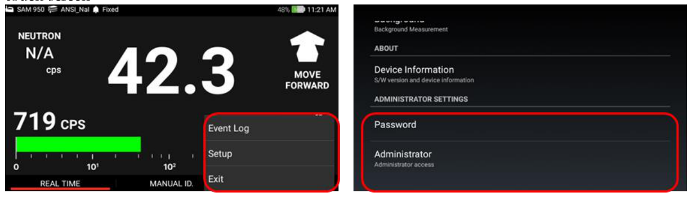
Step 3. Agent and Search Place Information
- Setup menu can be accessed by press menu button on the handle or Touch icon on the touch screen.
- Select a 'Setup'.
- Type in information on the "User Name" and "Search Location" fields.
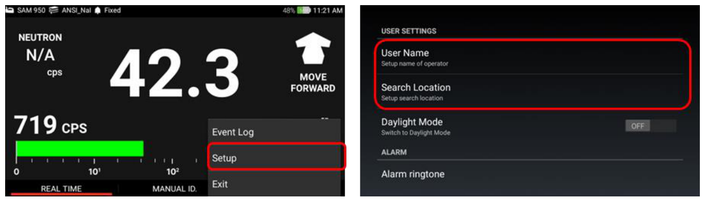
Step 4. Daylight Mode
SAM 950 supports switching to Daylight mode. This is a theme with a white background that helps improve visibility when the device is used outdoors. To switch to Daylight mode, follow these steps:
- Setup menu can be accessed by press menu button on the handle or Touch icon on the touch screen.
- Select a 'Setup'.
- Select "Daylight Mode" menu on Setup.
- A popup will appear asking for a restart application to switch to Daylight mode.
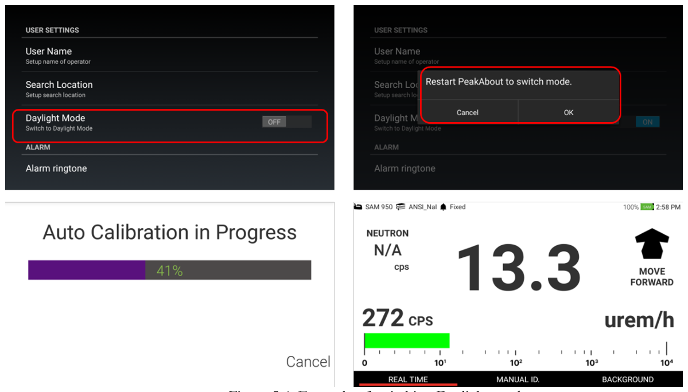
To switch to Normal mode, do the same by click turn of daylight mode.
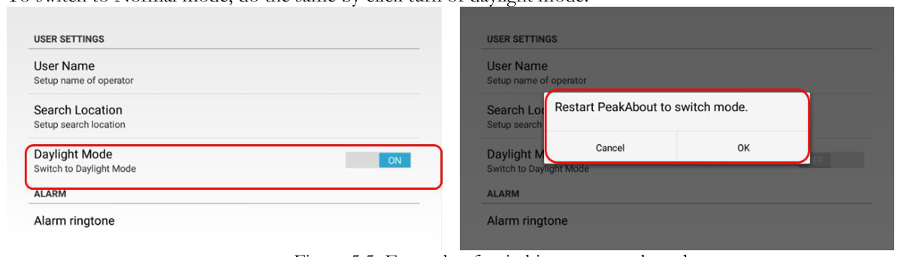
Step 5. Alarm Threshold
SAM 950 provides two options for alarm triggering described in the following table.
| Mode | Description |
|---|---|
| Fixed (Set) Alarm Threshold | Alarm is ON when the count rate exceeds the fixed (set) value. This method is prone to false alarms if the NORM background is fluctuating (usually the case when the system is in motion during search mode). |
| Variable Alarm Threshold | The threshold value is automatically set according to the statistical fluctuation of the measured background which is updated every 10 seconds. The standard deviation (σ) value is automatically calculated. The threshold value for the background is a multiple of this sigma (σ) value. This multiple is selected during the setup procedure. When the incoming count rate exceeds the threshold value then the system will alarm. This mode is recommended for search mode when the system is in motion and subject, therefore, to fluctuating background. |
- Select 'Set Alarm Mode' (figure 5.6).
- Select either "Fixed alarm mode" or "variable alarm mode".
- Select a fixed count rate value from the 'Fixed alarm mode' menu OR
- Select a standard deviation (sigma) value from the "Variable alarm mode".
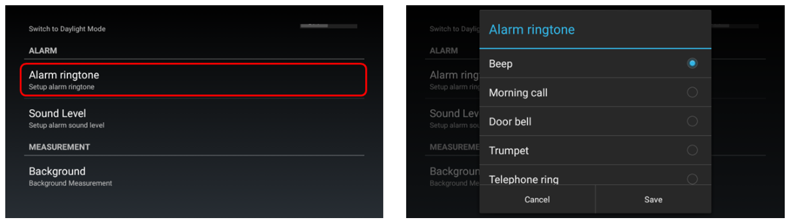
Step 6. Alarm Ringtone & Sound Level
The SAM 950 provides five alarm ringtone options as shown in Figure 5.7.
- Select 'Alarm ringtone' (figure 5.7).
- Select desired alarm ringtone.
- OK and save the ringtone.
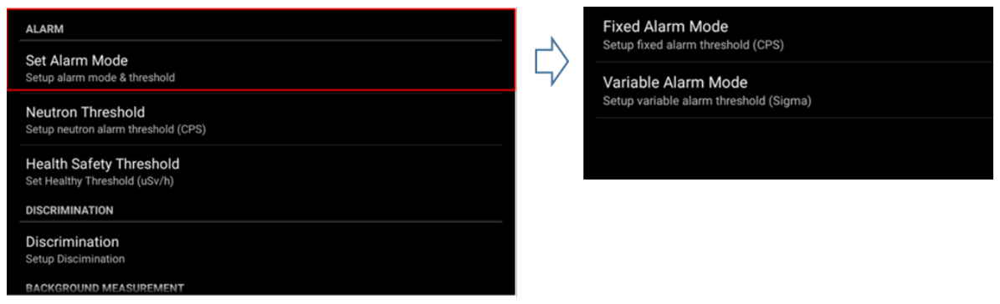
The sound volume of the alarm can also be adjusted, as shown in Figure 5.8.
- Select 'Sound level' (figure 5.8).
- Select the desired alarm volume level.
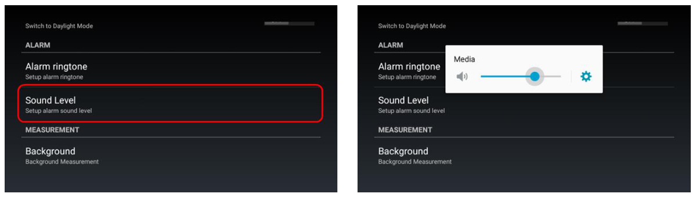
Step 7. Background Measurement
Reliable background information is critical for good nuclide identification and alarm performance. The software employs an advanced "NORM Rejection Algorithm" to reduce false alarms due to the fluctuations in the naturally occurring background. Appropriate background measurement and system calibration of the SAM 950 will ensure that the best possible results are obtained.
Background measurement is easily accessed by clicking the Background menu on the primary GUI screen, as shown in the figure.
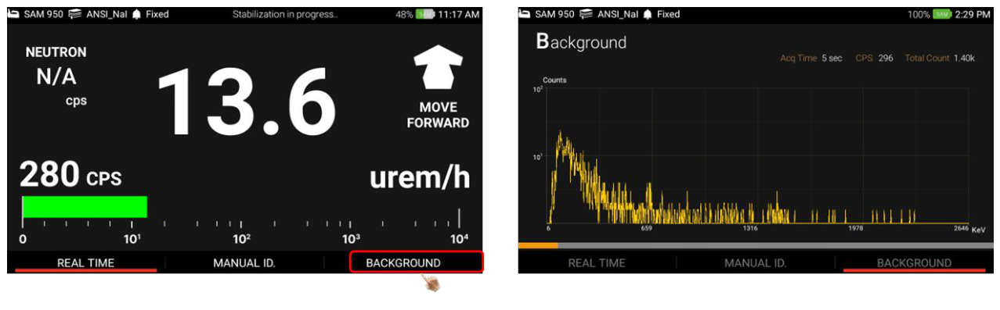
Background measurement can also be performed in the Setup menu by following steps 1 and 3.
- Select 'Setup' menu.
- Select 'Background' menu.
- Measure background information.
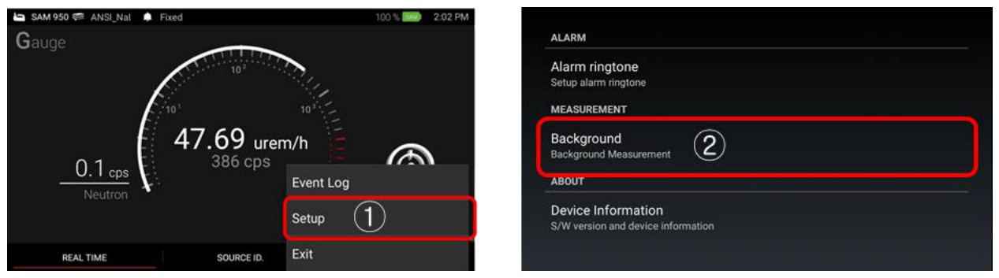
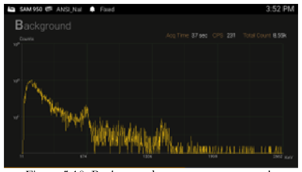
Step 8. Energy Calibration
- Select 'Set up' menu.
- Log in as User or Administrator (password protected).
- Select the desired setup procedure, i.e., Energy Calibration.
- Place Cs-137 source front to the SAM 950.
- Select 'Calibration' menu.

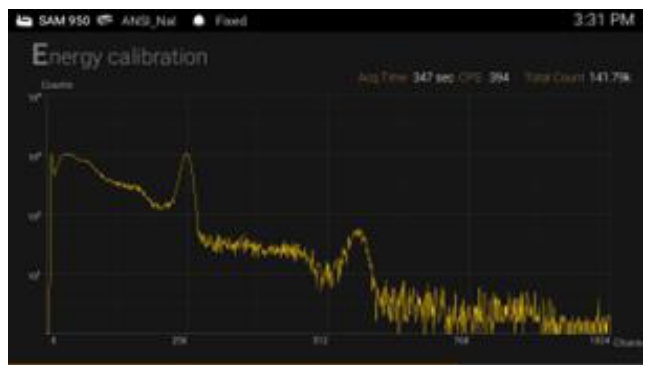
The calibration information is saved in the memory of SAM 950. And the new calibration information can be replaced by click "Save" when calibration is completed as shown in 5.12. By selecting "Cancel" the new calibration is NOT replaced to the new one.

Step 9. Radiation Monitoring
Now the SAM 950 is ready for operation.
- Gamma activity is displayed in both dose-rate (uSv/h or rem/h) and count rate (cps) units.
- Figure 5.13 shows the main screen.
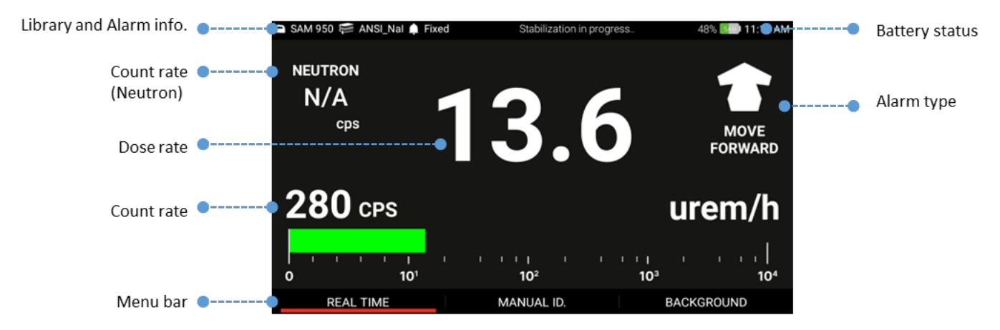
| Item | Description |
|---|---|
| PDA information | PDA status information is displayed in this window. For details, refer to the "Samsung Galaxy Player" manual. |
| Status Information |
|
| Gamma activity display | Gamma activity is displayed in the selected 'dose rate' units. |
Step 10. Alarm & Isotope Identification
When the SAM 950 alarms the display changes to red (as shown in figure 5.14) and the alarm audible warning is activated.
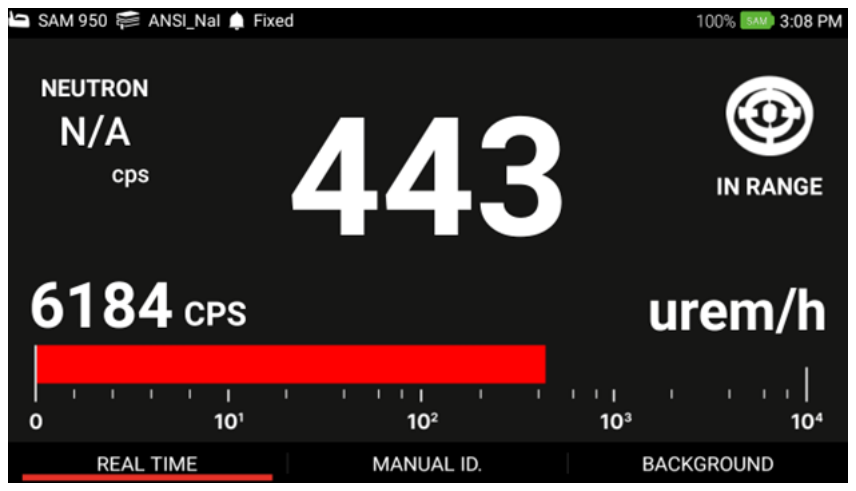
SAM 950 provides 4 alarm status. Details are summarized in table 5.1.
| Alarm Type | Description |
|---|---|
| Activity level is too low to trigger alarm. User has to move forward to activate alarm. | |
| Activity level is too high. User has to move back for safety. | |
| Appropriate alarm condition. Manual ID can be performed in this range. | |
| Activity level is extremely high and user has to be evacuate immediately. |
Table 5.1. Alarm type and its description
Step 11. Manual ID
There are three ways to execute 'Manual ID': 1. Press and hold the 'Enter' key for about 2 seconds, 2. Touch the 'Source ID' menu on the main screen, or 3. Scroll and locate the red bar on the 'manual ID' menu by using left/right button on the handle and press 'Enter' key.
- Touch the Manual Identification bar and an Event Spectrum will begin immediately.
- The default capture time for Manual Identification is 30 seconds. You may increase or decrease the capture time by touching the symbols ▲ or ▼ respectively. Default time is increased or decreased in increments of 10 seconds.
Default capture time and increment can be programmable in Setup menu. When the capture time has elapsed, the Isotope Identification screen will return to the ID result screen.
Step 12. Event Log List
The Event Log associated with a 'Manual ID' is automatically generated and saved in the PDA device. The Event Log screen provides a summary of every alarm event. This data is transferred to the command center software database by connecting the PDA to the command center PC. Once the information is downloaded to the database, the content is automatically deleted on the PDA.
Complete analysis of the spectra for the stored events can be performed with either the PDA or the Command Center SW installed on the Command Center PC.
- Select 'menu button' (Long Press).
- Select 'Event Log' menu.
The SAM 950 provides the following functions in the Event Log list:
Send event(s) from Event Log to Reach-Back
User also can send any event(s) stored in Event Log either to Reach-Back center or third-party server (RadResponder).
- Select event from the Event log list and hold for about 2 seconds.
- Select 'Reach-back' icon as destination to send.
- Select transmit.
Send event(s) from Event Log to RadResponder
With similar manner to Reach-back service, the event(s) can be send to a server of third party directly. We have partner with RadResponder team and setup necessary account and data format to send our event file. For details about RadResponder please visit www.Radresponder.net
- Select event from the Event log list and hold for about 2 seconds.
- Select 'RadResponder' icon as destination to send.
- Sign in with RadResponder account.
- Click 'Grant'.

Validation of file transfer to RadResponder server: User can validate file transfer by examining 'success' tag on the event or visiting RadResponder site (www.radresponder.net: /data/spectra). Figure 5.19 shows examples of successful file transfer.
Send event(s) from Event Log to other devices (Window OS, Android OS)
The event(s) can be sent to another device with Windows (PC, tablet) or Android OS via Bluetooth transfer. All selected events are saved in a ZIP file and sent.
- Select event(s) from the Event log list and hold for about 2 seconds.
- Select 'RadResponder' icon as destination to send.
- Select desired device to send.
- On the receiving device, click "Accept" file, and the file will be sent.
Download event(s) to PDA
- Select event(s) from the Event log list and hold for about 2 seconds.
- Select Download menu.
- A dialog asking to save will pop up. File name is editable. Click OK to save as a ZIP file.
- The file will be saved on device PDA's storage.
Event type change
- Select event(s) from the Event log list and hold for about 2 seconds.
- Select 'Edit' icon as destination to send.
- A dialog asking to edit will pop up. Select type desired event and click OK to process.
- The result shows that the event type has been changed.
Delete event
- Select event(s) from the Event log list and hold for about 2 seconds.
- Select '3 dot' icon.
- Select "Delete Event" menu.
- A dialog asking to delete will pop up. Click OK to delete event.
Step 13. Event ID and Info
An event spectrum and its associated information can be displayed by touching the event on the list (Figure 5.16). The Event Log screen appears as shown in figure 5.24. The Event Log screen consists of 3 tabs, i.e., EVENT ID, EVENT INFO and PHOTO/VIDEO. Figure 5.24 and 5.25 shows EVENT ID and EVENT INFO screen, respectively.
General information of any detected nuclide can be displayed by touching a nuclide from the list. A popup "Help screen" is appeared as shown in the figure below.
Step 14. Note and Photo
Text comments and/or photo/video may be attached to the opened event. 'Attach text comment' procedure is shown in figure 5.26.
- Touch 'EVENT INFO' tab. 'EVENT ID' screen switches to 'EVENT INFO' screen.
- Touch comment area. The keypad and typing window screen appeared.
- Type in comments and touch 'Done' button.
'Attach photo / Video / Recorder' procedure is described in figure 5.27.
- Touch "PHOTO/VIDEO/RECORDER" tab.
- Touch menu key (Long press). Then, Photo/Video/Recorder bar is showed up.
- Touch "Photo" or "Video" or "Recorder" bar. Photo or Video or Recorder application is now opened.
- Take photo or video or recorder and touch "Save" button.
Auto Calibration and Stabilization
The auto calibration and stabilization feature adjusts the calibration parameters of the system to correct for any drift caused by environmental changes (generally ambient temperature).
Auto calibration is automatically executed when the SAM 950 is powered up (refer to figure 5.28). If user determines to cancel the auto calibration, it can be stop by touch 'Cancel' button. The auto stabilization is executed every 3 minutes unless the unit is in alarm status.
When auto calibration and stabilization is executed the system automatically adjusts its gain using radiation generated by the K-40 radionuclide found in natural potassium. The 1.4 MeV peak from the K-40 nuclide present in naturally occurring potassium is utilized. A calibration source is not needed. KCl powder is already securely installed if it is desired to achieve stabilization in a shorter time, as might be in the rare case of a location where there are unnaturally low levels of potassium. The stopping criteria for this automatic feature are the integrated counts in the K-40 peak. The value for the integrated counts is defined in the setup configuration. Typically 5,000 counts are recommended in order to ensure that the stabilization K-40 peak is well defined. Supplemental Potassium Chloride (KCL) salt can be used to assist the stabilization if necessary.
When Bluetooth connection is complete, the SAM 950 will typically perform Auto Calibration. It is advised that you wait for Auto Calibration to complete (100%) in order to proceed further, but if your device has been manually calibrated recently, then you may cancel if you wish.
6Command Center Software
Connection Between PDA and PC
Download of the event log data to the command center database is achieved by connecting the PDA to the PC with the provided USB cable. The procedure is detailed below:
- Exit the PeakAbout software.
- Connect SAM 950 to the PC using a USB cable. The USB port is located on the back of the SAM 950 unit.
- From PC, open PeakID software.
- Refer to the PeakID software chapter for backup/management database.
Installation Instructions
Figure 6.2 (a) through (d) describe the installation of the Command Center software.
Primary GUI Description
The primary GUI for the command center software is shown in figure 6.3 and described in the table that follows.
| # | Item | Description |
|---|---|---|
| 1 | Database directory | Data can be transferred to the SAM III PeakID program either from PDA or from the database on PC |
| 2 | General information | Date, agent, search place and event summary are displayed |
| 3 | Event list | List of event log |
| 4 | Event Spectrum | Spectrum of selected event |
| 5 | Real Time activity | Activity as a function of time |
| 6 | Identification | Nuclide identification information of selected event |
| 7 | Comments | Attached comments are displayed |
| 8 | Nuclide Library | Link to the nuclide library management tool |
| 9 | Photos | Attached photos are displayed |
| 10 | XML save | Save the file spectrum and report as XML file format |
Spectrum Display Scale
The spectrum can be displayed as either a linear or a logarithmic scale. To switch simply click mouse button in the spectral area.
Radionuclide Library Management
The nuclide library is managed by the command center software installed on the PC. Only administrator can upload built-in library to the PDA. To upload a library:
- Open the nuclide library by clicking the "Isotope Library" button.
- Enter Administrator password and login (figure 6.5).
- Select library from the list (figure 6.6 left).
- Click "Upload to PDA".
In research mode only (using factory defined special password with instruction) user can add, edit, or delete the library as described below.
- Open the nuclide library by clicking the "Isotope Library" button. The Nuclide library management screen will appear (figure 6.6 right).
- Press "New" button to generate new library or select library from the "Library name" list to modify existing library.
- Add nuclide: type in information for the new nuclide and click the "add" button.
- Edit nuclide: select a nuclide from the list and edit the information as desired.
- Delete nuclide: select a nuclide from the list and click 'delete' button.
- Upload to PDA: click "Upload to PDA" button.
Detectable Isotope List
| Category | Isotopes |
|---|---|
| NORM | K-40, Ra-226 and daughters, Th-232 and daughters |
| Medical | F-18, Cr-51, Ga-67, Mo-99, Tc-99m, Pd-103, In-111, I-123, I-125, I-131, Xe-133, Sm-153, Tl-201 |
| Industrial | Na-22, Co-57, Co-60, Se-75, Rh-106, I-132, I-133, Ba-133, Cs-134, Cs-137, Eu-152, Ir-192, Am-241 |
| SNM | U-233, U-235, U-238, Pu-239, Pu-241, Np-237 |
Table 6.1. Detectable Isotope List
XML File (ANSI42.42) Conversion
The spectrum in the event log can be saved in the standard ANSI42.42 XML file format. The procedure for saving such a file is described below.
- Select the event from the event list and click the disk icon in the lower left corner of the screen. The destination directory screen will appear (figure 6.6 below).
- Browse to, then select the desired directory and click "Save".
Step by Step Instruction for Command Center SW Operation
Step 1. Event log download from PDA to PC
- Open 'SAM III PeakID' software.
- Click "Load from PDA".
- The event log now downloads and the event list is displayed on the "event list" window.
- Select an event on the list. The spectrum is displayed on the "Event Spectrum" window.
- Time and duration of the selected event are highlighted on the "Real time activity" window.
- Nuclide identification information for the selected event is displayed in the "Detected Nuclide" window.
Step 2. Event analysis from the database
All the events collected from multiple units may be stored in a single database and managed by the command center software. Display and analysis of the events in the database do not require that a PDA is connected to the PC.
- Click "Load from DB". The database folder information popup appears.
- Click on the folder of interest. Sub-folders are sorted according to connected SAM 950 devices.
- Select the sub-folder for the desired SAM 950 unit.
- The list of event(s) for the selected folder is displayed in the "Event list" window.
- Select the desired event from the list. The spectrum will appear in the "Event Spectrum" window.
- The time of day and acquisition time are highlighted in the "Real time activity window".
7Reminders & Useful Tips
- Do not open the cover. The servicing of the unit should only be handled by BNC qualified/trained personnel.
- Do not connect the PDA to the PC (USB cable) while the PDA-SAM 950 is in operating status.
- Turn off unnecessary PDA applications to optimize the performance of PDA-SAM 950 communication and operation.
- Be familiar with the PDA operation. Please refer to the Samsung Galaxy Player user manual.
8Contact
Berkeley Nucleonics Corporation
- Phone: (415) 453-9955
- Email: info@berkeleynucleonics.com
- Web: www.berkeleynucleonics.com
- Address: 2955 Kerner Blvd., San Rafael, CA 94901
Document Version: v1.5 | Print Code: 52028210